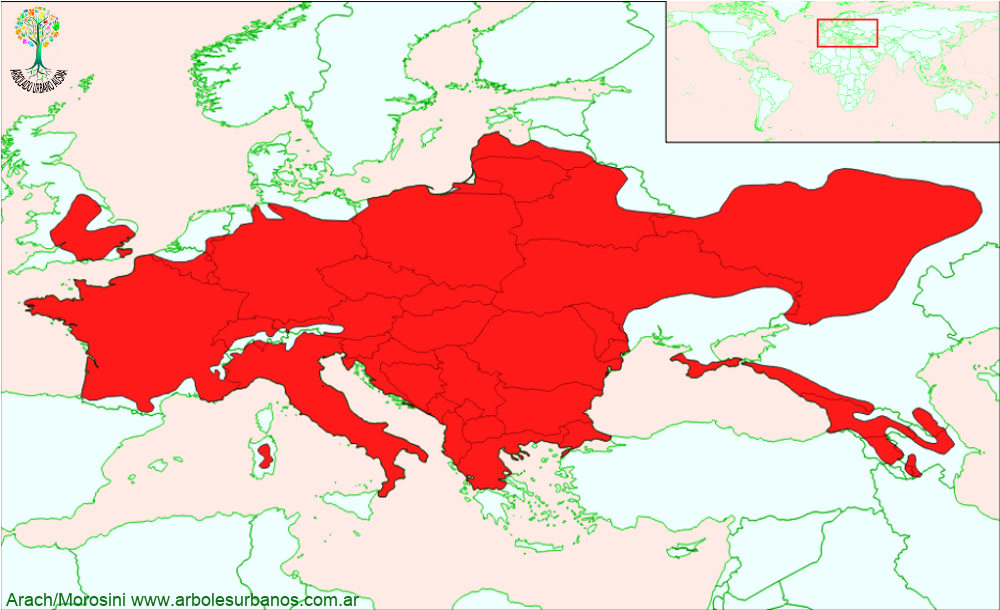

Click en las imágenes para ampliar

{kind=link}
{kind=link}
Peral
NOMBRE CIENTÍFICO: Pyrus communis
FAMILIA BOTÁNICA: Rosáceas
ORIGEN: Es originario de Europa oriental y de Asia central, domesticada hace más de 2000 años, luego se difundió por el resto de los continentes.
DESCRIPCIÓN GENERAL: Es un árbol que puede alcanzar más de 20 metros, aunque si se lo trabaja para la producción de fruta, no supera los 7 u 8 metros. En el primer caso tiene una ancha copa columnar, mientras que si se lo poda para fines de producción de fruta tiene la típica forma de vaso.
HOJAS: Su follaje es caduco, formado por hojas alternas, simples de forma oval, de borde liso o finamente dentado. De color verde intenso y brillante, en otoño se tornan amarilas o rojas.
FLORES: Sus flores son de hasta 4 cm de diámetro con 5 pétalos blancos y con anteras rojizas.
F RUTOS: Sus frutos son piriformes (valga la redundancia) son generalmente amarillos y también en una amplia gama que va del amarillo verdoso al rojizo
USOS: Además de la producción de fruta, el peral es un árbol que produce un madera muy apreciada por su dureza y calidad. Los usos ornamentales son tanto en los parques, como en jardines pequeños y en el arbolado de alineación, dependiendo de las variedades.
REPRODUCCIÓN: En general se multiplica por injertos, sobre pies de la misma especie u otra como Pyrus betulaefolia, o Membrilleros.
PARTICULARIDADES: Prefiere los infiernos fríos a los veranos calurosos, soportando más de -20°.